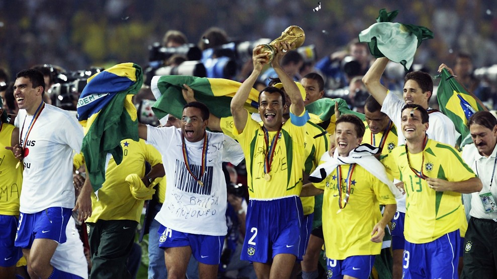

La Copa Mundial de la FIFA Corea del Sur/Japón 2002 fue la XVII edición de la Copa Mundial de Fútbol y se realizó en Corea del Sur y Japón, entre el 31 de mayo y el 30 de junio de 2002. Este torneo fue el primero organizado en la historia por dos países, el primero en realizarse fuera de Europa y América, el primer mundial en realizarse en el siglo XXI, el primero del tercer milenio y el primero en realizarse en Asia. El torneo, en el que participaron 32 selecciones, tuvo fuertes contrastes. Algunos equipos considerados de segundo y tercer orden en el fútbol internacional lograron excelentes resultados, como los semifinalistas Turquía y Corea del Sur, mientras la debutante selección de Senegal quedó entre los ocho primeros. Por el contrario, algunos de los equipos favoritos fueron eliminados en la primera fase como es el caso de Argentina y Francia, en el peor torneo de un vigente campeón al obtener un solo punto y no marcar gol alguno. Italia por su parte, fue eliminada polémicamente en octavos de final. A pesar de esto, la final de la copa fue disputada por dos de las principales potencias en la historia del fútbol: Brasil y Alemania. En Yokohama, Brasil obtuvo su quinto Mundial y amplió su historial como la selección con más títulos en la historia del torneo.
